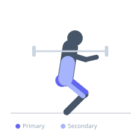
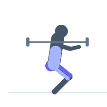

Exercise guide / Anderson Front Squat
Anderson Front Squat
A front squat performed from a dead stop with the barbell resting on safety pins inside a power rack, starting from the bottom position. Eliminating the stretch reflex removes elastic energy contribution and forces the lifter to generate strength from a fully stopped position, targeting the sticking point of the squat.
Primary muscles
rectus femoris
vastus lateralis
vastus medialis
vastus intermedius
gluteus maximus
Secondary muscles
biceps femoris long head
erector spinae
gluteus medius
Stabilizers
transverse abdominis
internal oblique
Equipment
Standard Barbell
Power Rack (Squat Cage)
Optional
Safety Squat Bar


Starting position
- Set safety pins inside a power rack at a height corresponding to the bottom of your front squat. Bar rests on the pins. Duck under and take the front rack position.
Setup
- Set safety pins at the correct height for your squat depth. Load the bar on the pins, then position yourself under it in the front rack before beginning each rep.
Steps
- Step 1: Position yourself under the bar in the front rack with elbows high.
- Step 2: Brace your core hard from a complete dead-stop position.
- Step 3: Drive through your legs to lift the bar off the pins and ascend to full lockout.
- Step 4: Lower the bar back to the pins with control. Reset and repeat.
Coaching cues
- Dead stop means dead stop
- Elbows stay high through the entire lift
Breathing
- Inhale and brace fully before each individual rep. Exhale at lockout.
Range of motion
- Full extension at lockout. Bottom position is predetermined by pin height.
Tempo
- Dead stop — 0-1-1-0
Common mistakes
- Rushing the start — ensure a full brace before each lift off the pins
- Dropping the elbows and losing the front rack during the lift
Safety
- Use significantly less weight than your regular front squat — no stretch reflex means much less force production
Training
- strength: 3–8 reps
- strength: 3–5 sets
- Rest: {'strength': 180}